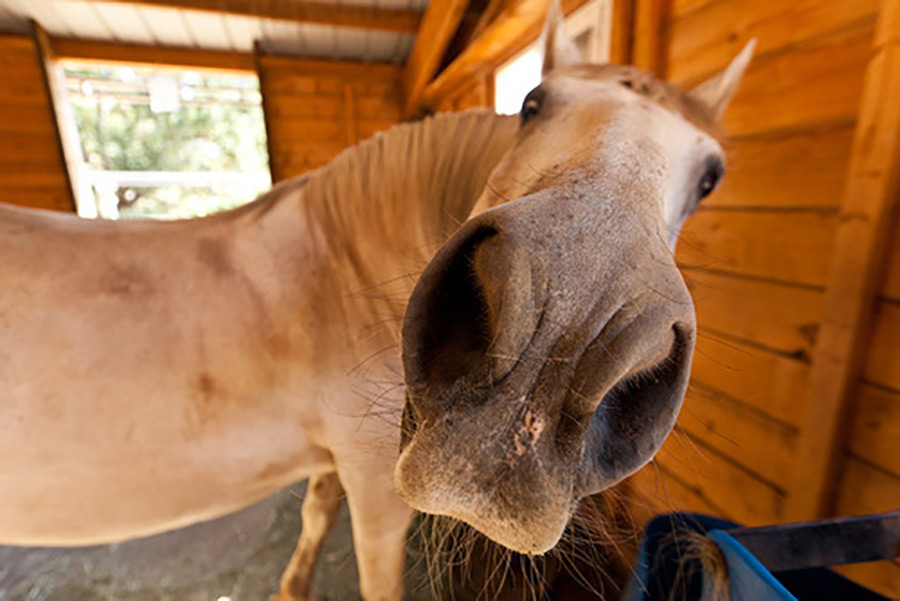

Horses

Ah, an interesting query! Hourses are actually a popular topic in some equine-related communities. They are similar to normal horses but are bred to have a shorter stature, typically between 10-12 hands (40-48 inches or 100-120 cm) tall. Hourses are often preferred by riders who want a smaller, more manageable horse for everyday riding or for children to learn on. They are also sometimes used in therapy programs for people with disabilities.
GYM

A gym is a facility that provides equipment and services for physical exercise and fitness training. Many gyms offer a variety of amenities, such as cardio machines, weight machines, free weights, and group fitness classes. Some gyms are dedicated to specific types of exercise, such as yoga or Pilates, while others offer a more general fitness program. Many gyms also provide personal training services and nutrition counseling to help members achieve their fitness goals.
Food

Food is one of the basic necessities of life. Food contains nutrients—substances essential for the growth, repair, and maintenance of body tissues and for the regulation of vital processes. Nutrients provide the energy our bodies need to function. The energy in food is measured in units called calories.